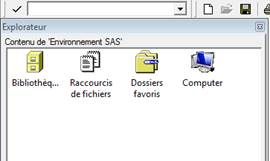
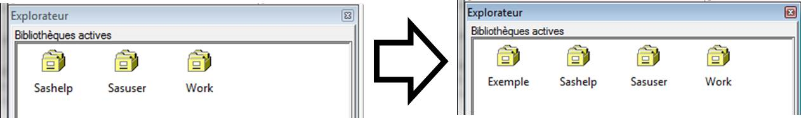
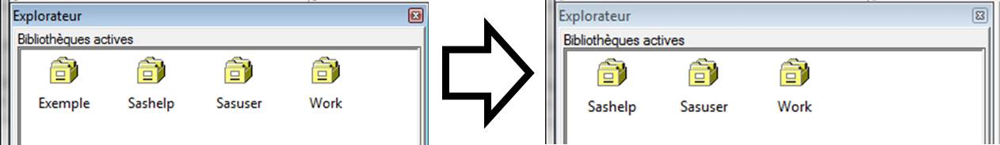
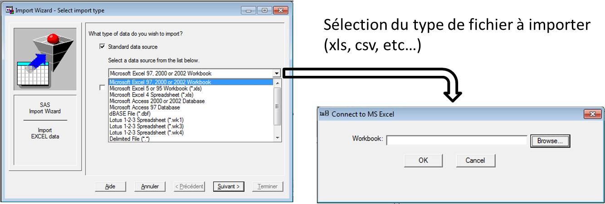

Statistiques et études économiques sous SAS
Introduction
L'interface
L'éditeur
La fenêtre Editeur est la fenêtre dans laquelle les lignes de commandes sont insérées

Le journal
Le journal (ou Log) est la synthèse de l’exécution des instructions :
Messages d’erreurs, avertissements et notes

La sortie
La fenêtre Sortie (ou OUTPUT) contient les résultats issus d’étapes PROC

Explorateur / résultats
Dans la fenêtre de gauche, deux onglets sont présents
Explorateur
L’onglet Explorateur donne notamment accès aux bibliothèques et à leur contenu

Résultats
L’onglet Résultats donne accès à l’ensemble des résultats générés par SAS au cours de la session de travail

L'interface

Principes de programmation
Interaction programme SAS avec les données-avant

Interaction programme SAS avec les données-pendant

Interaction programme SAS avec les données-après

Décomposition d'un programme SAS
Un programme est une suite d’étapes SAS
Principalement de deux types d’étapes nommées
- DATA et
- PROC
Décomposition d'un programme SAS
Chaque étape est une suite d’instructions
qui peuvent être accompagnées de mots-clés
et qui se terminent par un ;
Décomposition d'un programme SAS
Les étapes se terminent par le mot clé RUN;
ou dans le cas de certaines étapes PROC le mot clé QUIT;
QUIT; est destiné à liberer la connexion avec les objets manipulés
Ecriture d'un programme SAS
L’écriture d’un programme nécessite quelques règles élémentaires pour faciliter sa lecture et les phases de débugage
Ecriture d'un programme SAS
Il faut toujours commenter le programme
Pour insérer des commentaires, il existe deux synthaxes
/*Insérer des commentaires*/
*commentaire;
Ecriture d'un programme SAS
Ne pas hésiter à exécuter fréquemment le programme, en prenant les précautions nécessaires, afin de ne pas accumuler les bugs
Exécution d'un programme SAS
L’exécution d’un programme s’effectue en appuyant sur F3 ou à l’aide du bouton
Exécution d'un programme SAS
A chaque exécution, le système complète la fenêtre Journal en générant une suite de notes, d’avertissements ou d’erreurs que nous apprendrons à décrypter
Analyse des sorties
Lorsque des tables sont générées par le programme, il convient de toujours vérifier qu'elles correspondent à nos attentes
Analyse des sorties
L’onglet Sortie est alimenté dans le cas de certaines étapes
Cet onglet peut vite s’avérer trop volumineux pour être correctement interprété
Ne pas hésiter à nettoyer cet onglet en utilisant la commande Ctrl + E
Mon 1er programme SAS : Hello World
A vous de jouer !
4 data _null_;
5 put "Hell" "o World!";
6 run;
Hello World!
NOTE: DATA statement used (Total process time):
real time 0.01 seconds
cpu time 0.01 seconds
Gestion des bibliothèques
Liaison entre le programme et les stockages de bases de données
Introduction aux bibliothèques
Le logiciel SAS dispose d’un système de bibliothèques pour la gestion de bases de données
Une bibliothèque (ou librairie) consiste en un nom virtuel attribué à un répertoire physique
C’est ici que vous stockerez les tables (appelées data) qui contiennent les variables en colonnes et les observations en lignes
Affecter une bibliothèque
Afin d’affecter une bibliothèque, il suffit de rentrer le code ci-dessous dans la fenêtre Editeur, en respectant la syntaxe suivante :
Exemple
A vous de jouer !
Libname
exemple
'C:\votre_repertoire\data1';
7 Libname exemple 'C:\votre_repertoire\data1';
NOTE: Libref EXEMPLE was successfully assigned as follows:
Engine: V9
Physical Name: C:\votre_repertoire\data1
Désaffecter une bibliothèque
De manière symétrique, on peut désaffecter une bibliothèque en utilisant l’instruction SASclear
Exemple
Libname exemple clear ;
Remarques
Les affectations des bibliothèques se font toujours en début de programme
Par défaut, la seule bibliothèque définie est une bibliothèque temporaire appelée WORK
La WORK est automatiquement réinitialisée à la fermeture des programmes SAS, et tout son contenu est dès lors supprimé
Alimentation des bibliothèques :
L'import de données
L'import de données
Pour importer des tables dans une bibliothèque,
deux solutions sont envisageables :
- L’assistant SAS
- La PROC IMPORT
L'assistant SAS
Dans l'onglet fichier\Importer données...
 en cas de problème, résolution possible en lançant l'éxécutable AccessDatabaseEngine.exe dans :SAS Software Depot\products\sysreqwizard__92210__prt__xx__sp0__1\redist\ace\en ou dans :
SAS Software Depot\products\ace__99140__prt__xx__sp0__1\w32\native
ou vérifier les versions de SAS vs Excel
L'assistant SAS
Sélectionner la feuille Excel préalablement préparée pour l'import
Puis sélectionner la librairie dans laquelle la table sera stockée sous SAS

L'assistant SAS
Il convient ensuite de donner un nom à la table importée
Le nom attribué devra être adapté au logiciel, il faut donc proscrire les espaces et les caractères spéciaux

Autre méthode d’import de données
Il existe également une procédure SAS qui permet d’importer directement des tables sans utiliser l’assistant
Pour cela il faut maitriser la proc import et respecter la syntaxe suivante
PROC IMPORT
OUT= nom_de_la_librairie.nom_de_ma_table
DATAFILE= 'Chemin de mon fichier.xls'
DBMS=XLS REPLACE; /*Dans le cas d’un fichier xls*/
SHEET= 'nom_de_la_feuille_Excel_à_importer$' ;
GETNAMES=YES ; /*Conserve les noms de colonnes stockés dans la première ligne du fichier Excel*/
RUN
;
/*Instruction qui exécute les instructions qui précèdent*/
ancienne version : DBMS=EXCEL2000 REPLACE;
Autre méthode d’import de données
Dans l’exemple précédent, le code qu’il aurait fallu insérer dans la fenêtre Editeur aurait été le suivant:
PROC IMPORT
OUT= EXEMPLE.MATABLE
DATAFILE= 'C:\SAS\mon_ficher.xls'
DBMS=XLS REPLACE;
SHEET= 'ma_feuille$'
GETNAMES=YES ;
RUN ;
Autre méthode d’import de données
De la même manière, la table aurait été définitivement stockée dans la librairie sélectionnée
Le journal aurait alors retourné la note suivante
Note: EXEMPLE.MATABLE was successfully created.
Formats et opérateurs
Remarques sur les formats
Les formats de variables sont cruciaux et s'avèrent être à l’origine de nombreuses erreurs de compilation
Il est important d’être vigilant aux formats des variables lors de leur création ou de leur import
Principes de définition de formats
Les formats SAS sont définis comme suit
< $>format< w>.< d>
| Code | Signification | $ | Indique un format de type chaine de caractère | format | Mot clé qui indique à SAS le format que l'on souhaite attribué | w | Indique la longueur totale de la variable incluant espaces et caractères spéciaux | . | Délimiteur entre w et d | d | Indique le nombre de décimales requises dans une variable numérique |
|---|
Principaux formats sous SAS
Les variables caractères ou alphanumériques sont identifiées par le symbole $
Elles ont une longueur maximale définie lors d’un import comme la longueur maximale de la modalité associée à la variable importée
| Code | Signification | $2. | Ab | $UPCASE2. | AB |
|---|
Principaux formats sous SAS
Les variables numériques sont identifiées par le nombre de chiffres qu’elles peuvent contenir et un nombre de décimales si besoin
| Code | Signification | 5. | 12345 | 7.2 | 1234.56 | NUMX7.2 | 1234,56 |
|---|
Principaux formats sous SAS
Les variables dates sont les plus complexes car soumises à différentes conventions nationales
Il s’agit de cas particuliers de variables numériques
| Code | Signification | DDMMYY10. | 25/07/2014 | MMYYS7. | 07/2014 | YEAR4. | 2014 | FRADFWDX. | 25 Juillet 2014 | FRADFWKX. | Vendredi 25 Juillet 2014 |
|---|
Introduction au risque de troncature
Un format mal défini peut causer des erreurs lors de la compilation d’un programme
Cependant il peut arriver que le programme parvienne à compiler mais les erreurs de définition de formats peuvent altérer les données de manière dramatique
Introduction au risque de troncature
Par exemple, prenons le cas d’une classe de 19 élèves telle que :

DATA exemple ;
set sashelp.class;
RUN ;
Introduction au risque de troncature
En cours d’année, un nouvel étudiant rejoint la classe
Sa description est contenue dans la table nouvel_eleve telle que :

DATA nouvel_eleve ;
name = 'Jean-Charles' ;
Sex = 'M' ;
Age = 21 ;
Height = 58.645 ;
Weight = 102.786 ;
run ;
Introduction au risque de troncature
J’intègre la nouvel élève à la classe
La variable Name initialement était définie par défaut comme étant une chaine de 8 caractères. Jean-Charles est une chaine
de 12 caractères elle a été tronquée au niveau du 8ème caractère

DATA class ;
set exemple nouvel_eleve ;
RUN ;
Introduction au risque de troncature
Je veux alors implémenter les notes à l’examen stockées dans la table note
La variable Name a cette fois était définie comme une chaine de 12 caractères maximum

Introduction au risque de troncature
Selon la table de référence que je vais sélectionner, le programme va s'exécuter mais 2 types de résultats sont attendus
Introduction au risque de troncature
Si la table Class est prise en référence, avec name définie $7. j'obtiens :

Introduction au risque de troncature
Si la table Note est prise en référence, avec name définie $12. j'obtiens :

Introduction au risque de troncature
Dans le premier cas, la modalité 'Jean-Charles' n'est pas possible. SAS reconnait alors 'Jean-Cha' dans les deux tables et parvient à faire le lien entre les deux individus.
Dans le second cas, la modalité 'Jean-Charles' est une modalité possible. SAS identifie alors 2 individus, Jean-Cha présent dans la table Class, et Jean-Charles présent dans la table Note.
Introduction au risque de troncature
Bien que le programme ne génère pas d'erreur, la mauvaise attribution des formats a dupliqué des individus et généré des valeurs manquantes dans le pire des cas. Dans le meilleur des deux cas, ce n'est qu'une question d'affichage.
Récapitulatif des opérateurs
Opérateurs de comparaisons
| Code | Signification | LT | < | Inférieur strict (less than) | EQ | = | Egal (equal) | GT | > | Supérieur strict (greater than) | LE | <= | Inférieur ou egal (less or equal) | NE | ^= | Différent (non equal) | GE | >= | Supérieur ou egal (greater or equal) |
|---|---|---|
Récapitulatif des opérateurs
Opérateurs logiques
| Code | Signification | AND | & | Et | OR | ! | Ou | NOT | ^ | Non |
|---|---|---|
Récapitulatif des opérateurs
Opérateurs arithmétiques
| Code | Signification | + | Addition | - | Soustraction | * | Multiplication | / | Division | x <> y | Min(x,y) | Minimum de x et y | x >< y | Max(x,y) | Maximum de x et y |
|---|---|---|
Récapitulatif des opérateurs
Concaténation de chaines de caractères
| Code | Exemple | Signification | !! ou || | Var = x||y||z | Concaténation simple |
|---|---|---|
| CATS | Var = CATS(x,y,z) | Concaténation en enlevant les blancs en début et fin de chaine de caractère | CATX | Var = CATX('-',x,y,z) | Concaténation en ajoutant un séparateur entre les variables |
| CAT | Var = CAT(x,y,z) | Concaténation en conservant les blancs en début et fin de chaine de caractères |
| CATT | Var = CATT(x,y,z) | Concaténation en enlevant les blancs uniquement en fin de chaines de caractères |
Fonctions
Fonctions sur chaines ce caractères
Ci-dessous sont présentées des fonctions qui prennent en arguments des chaines de caractères (ici notée x)
| Code | Signification | Length(x) | Retourne la longueur de x | Compress(x,'c') | Enlève les caractères C de la chaine de caratères x | Repeat(x,n) | Répète n fois la chaine de caractèrex x en une seule chaine de caractères | Index(x,m) | Retourne la place du mot m dans la chaine de caractères x | Upcase(x) | Met x en majuscules | Lowcase(x) | Met x en minuscules | Substr(x,n,l) | Extraie de x un mot de longueur l à partir du n ième caractère | Scan(x,n,'sep') | Extraie de x le n ième mot en considérant un certain séparateur 'sep' | Tranwd(x,y,z) | Remplace les occurences du mot y par le mot z |
|---|
Fonctions sur dates
Ci-dessous sont présentées des fonctions en relation avec les dates (ici notée d)
| Code | Signification | mdy(m,j,a) | Crée une date de jour j, mois m et année n | Date() | Retourne la date courante | Datepart(d) | Extraie la partie de la date d | Day(d) | Retourne le jour de la date d | Month(d) | Retourne le mois de la date d | Year(d) | Retourne l'année de la date d | Weekday(d) | Retourne le jour de la semaine de la date d |
|---|
Fonctions mathématiques
Ci-dessous sont présentées les principales fonctions mathématiques prenant en argumant une variable numérique (ici notée x)
| Code | Signification | Floor(x) | Renvoie la partie entière de x | abs(x) | Valeur absolue de x | Sign(x) | Renvoie 1 si x est positif, -1 si x est négatif et 0 sinon | Round(x,n) | Renvoie l'arrondi de x avec n chiffres après la virgule | Mod(x,y) | Renvoie le reste de la division euclidienne de x par y | sqrt(x) | Renvoie la racine carrée de x | exp(x) | Renvoie l'exponentiel de x | Log(x) | Renvoie le logarithme de x |
|---|
Fonctions trigonométriques
Ci-dessous sont présentées les principales fonctions trigonométriques prenant en argumant une variable numérique (ici notée x)
| Code | Signification | Cos(x) | Renvoie le cosinus de x | Sin(x) | Renvoie le sinus de x | Tan(x) | Renvoie la tangente de x | Arcos(x) | Renvoie l'arcosinus de x | Arsin(x) | Renvoie l'arsinus de x | Artan(x) | Renvoie l'artangente de x |
|---|
Fonctions statistiques
Ci-dessous sont présentées les principales fonctions statistiques prenant en argumant une série numérique (ici notée x1... xn)
| Code | Signification | n(x1... xn) | Renvoie le nombre de valeurs non manquantes de la série (x1... xn) | nmiss(x1... xn) | Renvoie le nombre de valeurs manquantes de la série x1... xn | mean(x1... xn) | Renvoie la moyenne de la série x1... xn | Var(x1... xn) | Renvoie la variance empirique de la série x1... xn |
|---|
Fonctions aléatoires
Ci-dessous sont présentées les fonctions qui permettent de générer des nombres aléatoires de paramètres prédéfinis a (généralement égal à 0)
| Code | Signification | Rannor(a) | Loi Normale centrée réduite | Ranuni(a) | Loi uniforme sur l'intervalle [0;1] | Ranpoi(a,l) | Loi de poisson de parmamètre l | Ranbin(a,n,p) | Loi binomiale de paramètres n et p | Rantbl(a,p1,...,pn) | Loi discrète de ditribution p1,...,pn |
|---|
Fonctions particulières
Ci-dessous sont présentées deux fonctions particulièrement utiles dans SAS
| Code | Signification | Lag(x) | Retourne la valeur précédente de la variable x | Lagn(x) | Renvoie la valeur n fois précédente de la variable x | Dif(x) | Retourne la différence d'ordre 1 de la variable x | Difn(x) | Renvoie la différence entre x et Lagn(x) |
|---|
Quelques illustrations avant
de passer à l'application
5-concatenation.sas
6-format_num.sas
7-formatdate1.sas